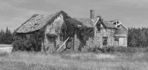
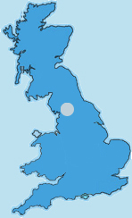

Wood Farm - Liverpool
|  |  |
A staggering 16th Century building with 3 bedrooms and a stunning converted loft. The house maintains a very airy feel and comes with 5000 acres of natural woodland. Previous owners did not want to sell but really had to live anywhere else.
May contain squirrels and other woodland creatures so prospective buyers must be fond of animals (or eating them).
£POA